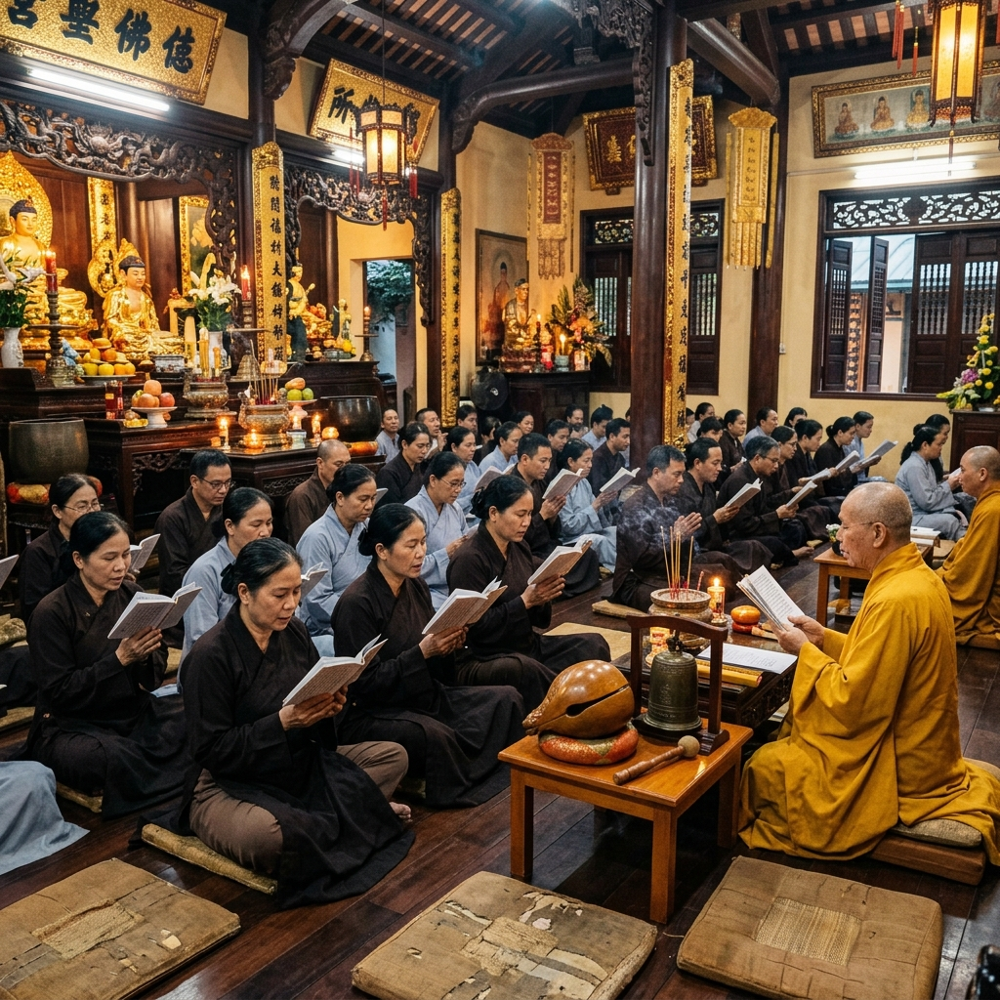

Tụng Kinh Tại Nhà — Nghi Thức và Hướng Dẫn Chi Tiết

Tụng kinh tại nhà là cách tu tập quan trọng của Phật tử tại gia. Không phải ai cũng có điều kiện lên chùa hàng ngày, nhưng chỉ cần 20-30 phút mỗi tối tụng kinh tại nhà cũng đã mang lại rất nhiều lợi ích cho tinh thần và đạo hạnh.
Bàn thờ Phật tại nhà
Nếu có điều kiện, nên lập một bàn thờ Phật nhỏ ở nơi trang nghiêm, sạch sẽ trong nhà. Trên bàn thờ đặt: tượng hoặc hình Phật ở giữa, bát hương phía trước, lọ hoa tươi bên trái, đĩa trái cây bên phải. Nếu không có bàn thờ riêng, bạn vẫn có thể tụng kinh tại bất kỳ đâu trong nhà, miễn sao nơi đó yên tĩnh và sạch sẽ.
Nghi thức tụng kinh cơ bản
Trước khi tụng
Tắm rửa sạch sẽ (hoặc rửa mặt, rửa tay), thay quần áo gọn gàng. Thắp một nén hương (nên dùng hương bột hoặc hương vòng, tránh hương hóa chất). Đứng trước bàn Phật, chắp tay xá ba xá.
Bài tụng gợi ý
Người mới bắt đầu nên tụng những kinh ngắn, dễ hiểu: Kinh A Di Đà (phổ biến nhất), Kinh Bát Nhã (Bát Nhã Tâm Kinh — chỉ 260 chữ), Kinh Phổ Môn (cầu Bồ Tát Quán Thế Âm), Chú Đại Bi (bài chú phổ biến). Nếu chưa thuộc, có thể đọc theo sách kinh, không cần phải thuộc lòng ngay.
Sau khi tụng
Đọc bài Hồi Hướng: "Nguyện đem công đức này, hướng về khắp tất cả, đệ tử và chúng sinh, đều trọn thành Phật đạo." Sau đó xá ba xá và kết thúc.
Một số lưu ý quan trọng
Tụng kinh không cần phải to tiếng — đọc vừa đủ nghe hoặc đọc thầm đều được. Không nhất thiết phải tụng lâu — 15-20 phút mỗi ngày nhưng đều đặn tốt hơn 2 tiếng nhưng chỉ tụng một lần rồi bỏ. Khi tụng kinh, cố gắng hiểu nghĩa những gì mình đọc, không chỉ đọc suông.
Không nên mê tín khi tụng kinh: tụng kinh không phải để xin xỏ, mà là để học hỏi lời Phật dạy và chuyển hóa tâm mình.
Lời khuyên của Thầy
Thầy Thích Bửu Nhân chia sẻ: "Nhiều Phật tử hỏi tôi: tụng kinh gì công đức nhiều nhất? Tôi trả lời: kinh nào bạn tụng với tâm thành kính, kinh đó có công đức nhất. Không phải kinh dài là hơn kinh ngắn, không phải tụng nhiều là hơn tụng ít. Quan trọng là tâm của bạn khi tụng."
"Nếu bạn mới bắt đầu, cứ chọn một bài kinh ngắn, tụng mỗi tối trước khi ngủ. Kiên trì một tháng, bạn sẽ cảm nhận được sự thay đổi trong tâm mình."